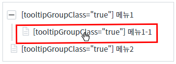
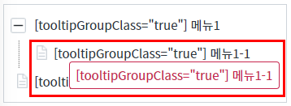
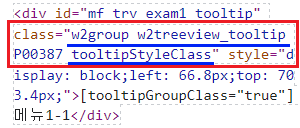
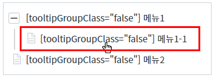
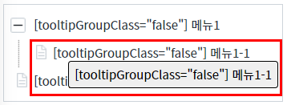
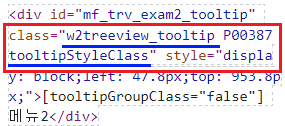
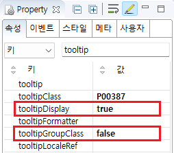

속성 'tooltipGroupClass'의 설정 값 비교 예제입니다.
이 속성은 Treeview의 노드에 출력되는 문자열을 툴팁으로 표시할 때 사용됩니다. 설정을 통해 브라우저에 생성할 툴팁 HTML 요소의 속성 'class'에 'w2group'를 추가할지 여부를 지정할 수 있습니다. 브라우저에 생성된 HTML 요소의 구성은 동일합니다.
설정 값에 따른 동작은 아래와 같습니다.
"true" : [default] 속성 'class'에 'w2group'를 추가합니다.
"false" : 속성 'class'에 'w2group'를 추가하지 않습니다.
노드 툴팁의 'class'에 'w2group' 추가하기
노드 툴팁의 'class'에 'w2group' 추가하지 않기
이 기능은 마우스 사용이 가능한 환경에서 확인할 수 있습니다. 브라우저 개발자도구의 Elements(요소)탭을 실행하고, Treeview의 노드에 마우스를 올려서 툴팁 HTML 요소의 'class'를 확인합니다.
STEP 1. 초기 상태를 확인합니다.
예제 영역 [(기본 설정) 노드 툴팁의 'class'에 'w2group' 추가하기]에 구성된 Treeview를 확인합니다.
속성 'tooltipClass'의 설정 값을 'P00387'로 지정하여 노드의 툴립에 아래의 CSS Class가 적용되었습니다.
Selector : .P00387.w2group.w2treeview_tooltip.tooltipStyleClassSTEP 2. 노드에 마우스를 올려 툴팁을 표시합니다.
두 번째 노드 '[tooltipGroupClass="true"] 메뉴1-1'에 마우스를 올립니다.
그림 1.브라우저(Chrome) 실행 예시

STEP 3. 실행된 결과를 확인합니다.
노드 툴팁이 표시됩니다.
그림 2.브라우저(Chrome) 실행 예시

브라우저 개발자 도구를 통해 노드 툴팁의 속성 'class'의 값을 확인합니다.
'class'의 설정 값 : w2group w2treeview_tooltip tooltipStyleClass P00387
설정 값에 'w2group'이 포함되어있습니다.
('P00387'는 Treeview의 속성 'tooltipClass'에 설정된 값입니다. 이 값은 테스트를 위해 별도로 지정된 값입니다.)브라우저에 랜더링된 HTML 구조
<div class="w2group w2treeview_tooltip tooltipStyleClass" id="mf_trv_exam1_tooltip" style="display: block; left: 66.8px; top: 703.4px;"> [tooltipGroupClass="true"] 메뉴1-1 </div>
브라우저에 랜더링된 HTML Elements의 'id'는 실행 시점에 동적으로 부여되어 환경에 따라 다릅니다.
그림 3.브라우저(Chrome) 개발자 도구의 Elements 예시

이 기능은 마우스 사용이 가능한 환경에서 확인할 수 있습니다. 브라우저 개발자도구의 Elements(요소)탭을 실행하고, Treeview의 노드에 마우스를 올려서 툴팁 HTML 요소의 'class'를 확인합니다.
STEP 1. 초기 상태를 확인합니다.
예제 영역 [노드 툴팁의 'class'에 'w2group' 추가하지 않기]에 구성된 Treeview를 확인합니다.
속성 'tooltipClass'의 설정 값을 'P00387'로 지정하여 노드의 툴립에 아래의 CSS Class가 적용되었습니다.
Selector : .P00387.w2treeview_tooltip.tooltipStyleClassSTEP 2. 노드에 마우스를 올려 툴팁을 표시합니다.
두 번째 노드 '[tooltipGroupClass="false"] 메뉴1-1'에 마우스를 올립니다.
그림 4.브라우저(Chrome) 실행 예시

STEP 3. 실행된 결과를 확인합니다.
노드 툴팁이 표시됩니다.
그림 5.브라우저(Chrome) 실행 예시

브라우저 개발자 도구를 통해 노드 툴팁의 속성 'class'의 값을 확인합니다.
'class'의 설정 값 : w2treeview_tooltip tooltipStyleClass P00387
설정 값에 'w2group'이 포함되어 있지 않습니다.
('P00387'는 Treeview의 속성 'tooltipClass'에 설정된 값입니다. 이 값은 테스트를 위해 별도로 지정된 값입니다.)브라우저에 랜더링된 HTML 구조
<div class="w2treeview_tooltip tooltipStyleClass" id="mf_trv_exam2_tooltip" style="display: block; left: 47.8px; top: 953.8px;"> [tooltipGroupClass="false"] 메뉴2 </div>
브라우저에 랜더링된 HTML Elements의 'id'는 실행 시점에 동적으로 부여되어 환경에 따라 다릅니다.
그림 6.브라우저(Chrome) 개발자 도구의 Elements 예시

Treeview의 속성을 정의합니다.
[필수] tooltipGroupClass="옵션 선택 값"
(옵션 설명)
- true: [default] 노드 툴팁의 속성 'class'에 'w2group'를 추가합니다.
- false: 노드 툴팁의 속성 'class'에 'w2group'를 추가하지 않습니다.
(예시)
예시) w2group을 추가하지 않음
tooltipGroupClass="false"
[필수] tooltipDisplay="true"
노드 툴팁 표시를 활성화합니다.
[선택] tooltipClass="CSS Class 명"
컴포넌트 단위로 툴팁에 CSS를 적용할 때 사용합니다.
(예시)
예시) class에 'P00387'를 추가
tooltipClass="P00387"
그림 7.웹스퀘어5 SP5 스튜디오의 Property View(속성창) 예시 - 노드 툴팁의 'class'에 'w2group' 추가하지 않기

소스 코드 - 노드 툴팁의 'class'에 'w2group' 추가하지 않기
<!-- Treeview 의 소스 본문 예시 --> <w2:treeview tooltipDisplay="true" tooltipGroupClass="false"> <!-- 중략 --> </w2:treeview>
tooltipGroupClass
tooltipDisplay
tooltipClass
[웹스퀘어5 SP5 개발 가이드] TreeView
링크 : https://docs1.inswave.com/sp5_user_guide/571f1c72bb8f77e6#bc8a9426f270f915